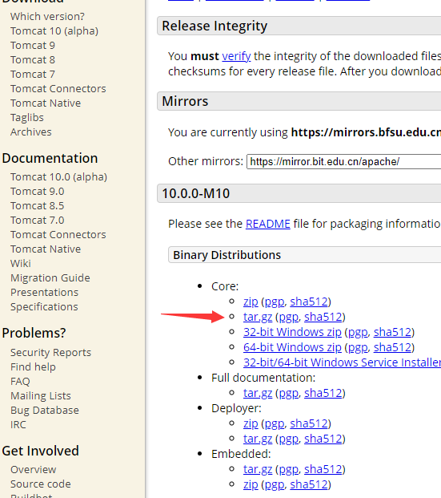
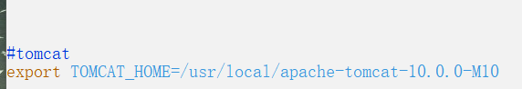
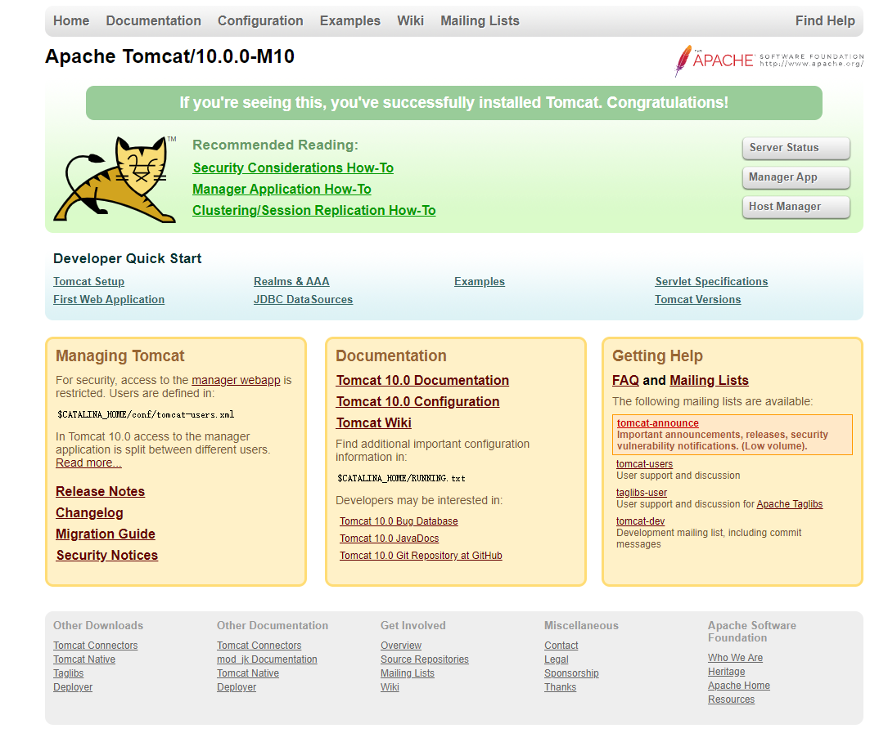

shyo密码管理器开发日志 0x01
前言
前言：9月开学到现在12月，想了各种密码管理器的实现方法，有思考纯前端实现密码存单独文件或存在本地数据库中，也有关联服务器的，期间也写了不少代码，但都没有一个很大的进展，在和老师的谈论中逐步理清大体框架，主要是实现一个密码存在服务端用以多端同步，用protobuf传输数据，并在前端加以处理的框架（一直觉得密码一旦在网络中传输就会有各种安全问题，这些都是需要解决的问题，由于我们的目标是基于OTP的密码管理器，所以这说不定是一个解决方案）。
开发准备
由于是多人开发，我就整了一个服务器（阿里云学生认证）（终于有自己的服务器辣，后面准备把博客迁移到服务器上），到时候开放一个端口供前端开发使用
准备使用之前有尝试过的TomCat和MySQL搭建JAVA后端
数据传输使用的是protobuf
服务器
当场在阿里云买了（虽然腾讯云好像更便宜，但在杭州没有站点）轻量应用服务器(和ECS有点区别但影响不大)，用的是系统镜像ubuntu18.04，然后ssh就能连了，起飞，爽到
安装JDK+TomCat
sudo apt install openjdk-11-jdk-headless安装JDK（TomCat需要JDK）
安装TomCat
https://tomcat.apache.org/下载源码

Window打开一个新的终端，用scp 被上传文件路径 上传服务器IP:/home/存在的路径上传
解压tar -zxvf apache-tomcat-10.0.0-M10.tar.gz
改权限sudo chmod 755 -R apache-tomcat-10.0.0-M10
移动sudo mv apache-tomcat-10.0.0-M10 /usr/local
修改文件cd /usr/local/apache-tomcat-10.0.0-M10/bin
sudo vi startup.sh
按i开始编辑
文件最后加入（可能还要加一个有关jdk的，但我这不用加我也不知道为啥）

Esc退出编辑模式，:wq保存并退出
然后sudo ./startup.sh，访问公网IP:8080即可

关闭服务是sudo ./shutdown.sh
安装MySQL
sudo apt-get update
安装sudo apt-get install mysql-server
sudo mysql -uroot -p初始root密码为空，直接Enter
设置root密码
use mysql;
update user set authentication_string=PASSWORD("自定义密码") where user='root';
update user set plugin="mysql_native_password";
flush privileges;
quit;
添加用户
CREATE USER 'username'@'host' IDENTIFIED BY 'password';
username：用户名
host：指定该用户在哪个主机上可以登陆，本地用户用localhost，从任意远程主机登陆，可以使用通配符%
password：用户密码
小结
管理器服务端涉及到MySQL和Tomcat，配置怎么说呢个人感觉还是很方便的（以前用其他系统装简直人间疾苦），这次至少一路绿灯过来的。
接下来就是尝试链接数据库，实现前后端的数据传输服务（也许会用到servlet），然后protobuf也要进一步研究了
然后有自己的服务器了撒花！
Author: 庄生晓梦
Link: http://yoursite.com/2020/12/06/shyo-1/
Copyright: All articles in this blog are licensed under CC BY-NC-SA 3.0 unless stating additionally.